|
 |
| akb48 53rd single sekai senbatsu sousenkyo | |
World Senbatsu 16 อันดับแรก |
|
|
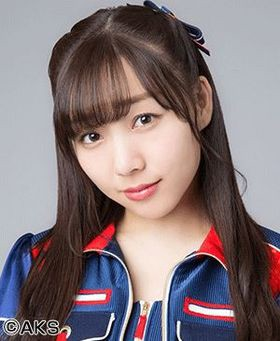 |
| อันดับที่ 1 Matsui Jurina (SKE48 — Team S) คะแนนโหวต 194453 คะแนน | อันดับที่ 2 Suda Akari (SKE48 — Team E) คะแนนโหวต 154011 คะแนน |
| 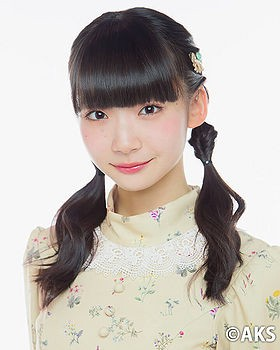 | |
| อันดับที่ 3 Miyawaki Sakura (HKT48 — Team KIV) คะแนนโหวต 141106 คะแนน | อันดับที่ 4 Ogino Yuka (NGT48 — Team NIII) คะแนนโหวต 81629 คะแนน |
| 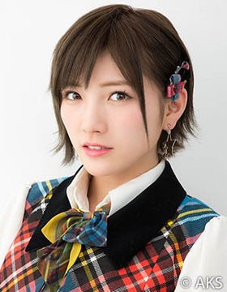 | 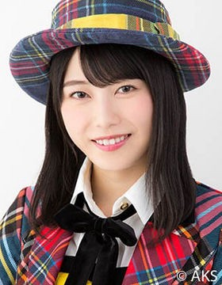 |
| อันดับที่ 5 Okada Nana (AKB48 — Team 4) คะแนนโหวต 75067 คะแนน | อันดับที่ 6 Yokoyama Yui (AKB48 — Team A) คะแนนโหวต 67465 คะแนน |
| 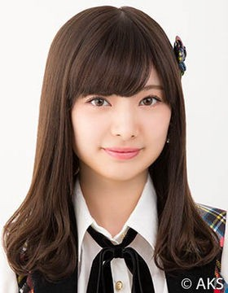 | 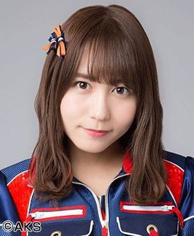 |
| อันดับที่ 7 Muto Tomu (AKB48 — Team K) คะแนนโหวต 62611 คะแนน | อันดับที่ 8 Oba Mina (SKE48 — Team KII) คะแนนโหวต 53998 คะแนน |
| 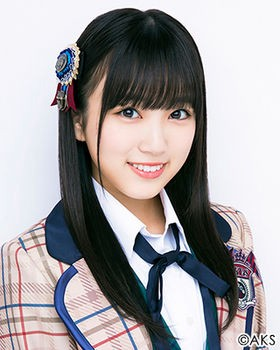 | 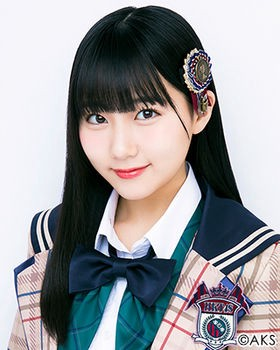 |
| อันดับที่ 9 Yabuki Nako (HKT48 — Team H) คะแนนโหวต 51620 คะแนน | อันดับที่ 10 Tanaka Miku (HKT48 — Team H) คะแนนโหวต 50175 คะแนน |
 |
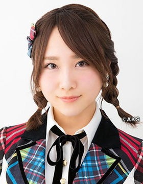 |
| อันดับที่ 11 Souda Sarina (SKE48 — Team KII) คะแนนโหวต 48671 คะแนน | อันดับที่ 12 Takahashi Juri (AKB48 — Team B) คะแนนโหวต 48100 คะแนน |
| 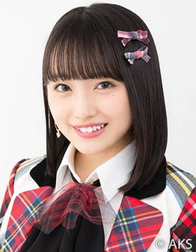 | 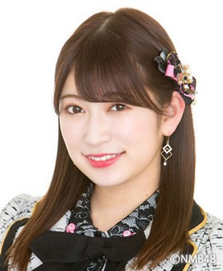 |
อันดับที่ 13 Mukaichi Mion (AKB48 — Team A) คะแนนโหวต 47485 คะแนน |
อันดับที่ 14 Yoshida Akari (NMB48 — Team M) คะแนนโหวต 46837 คะแนน |
| 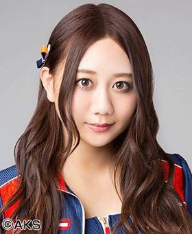 | 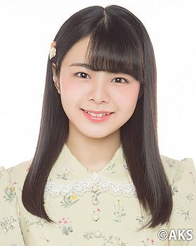 |
อันดับที่ 15 Furuhata Nao (SKE48 — Team KII) คะแนนโหวต 45688 คะแนน |
อันดับที่ 16 Homma Hinata (NGT48 — Team NIII) คะแนนโหวต 39241 คะแนน |